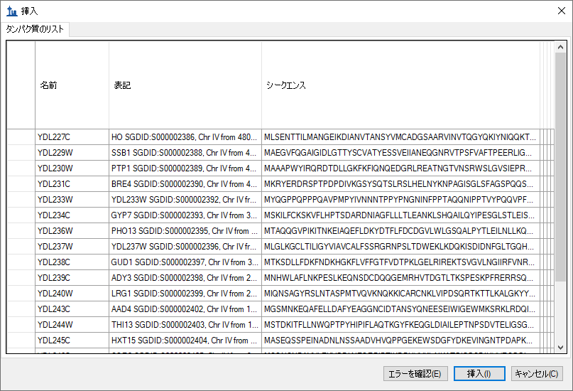
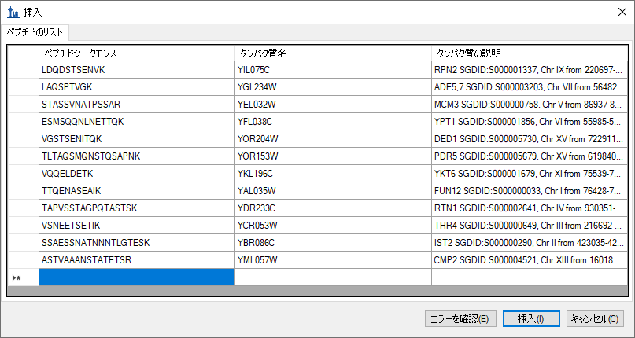
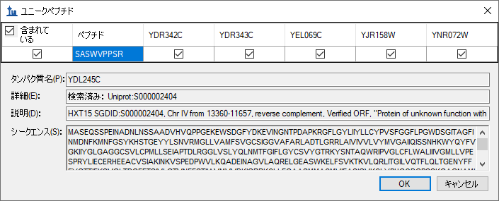
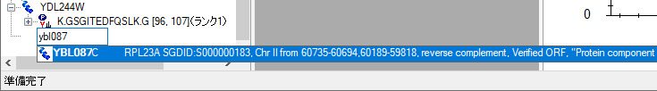
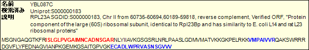
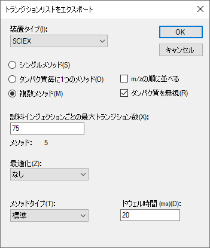

This tutorial will cover many of the features available in the Skyline Targeted Mass Spec Environment for creating new target lists for targeted analysis and instrument methods for Selected Reaction Monitoring (SRM also referred to as Multiple Reaction Monitoring - MRM) mass spectrometers. The Skyline support for creating documents from existing transition lists is covered in a separate tutorial.
In developing Skyline we aim to create a vendor-neutral platform for targeted mass spectrometry investigation. From all Skyline documents, you will be able to export transition lists for SRM instruments from Agilent, SCIEX, Shimadzu, Thermo-Scientific, and Waters. Skyline can also export native methods for these instruments as well as methods and isolation lists for Parallel Reaction Monitoring (PRM) which are not covered here.
One of the great benefits of exporting your methods from a Skyline document is that you are assured the instrument output will import seamlessly for use in data analysis with Skyline, though this also is covered in other tutorials.
Understanding how to create a targeted proteomics method in Skyline is a critical starting point, however, a good reason to explore this tutorial.
To start this tutorial, download the following ZIP file:
https://skyline.ms/tutorials/MethodEdit.zip
Extract the files in it to a folder on your computer, like:
C:\Users\brendanx\Documents
This will create a new folder:
C:\Users\brendanx\Documents\MethodEdit
If you have been using Skyline prior to starting this tutorial, it is a good idea to revert Skyline to its default settings. To do so:

The document settings in this instance of Skyline have now been reset to the default.
Since this tutorial covers a proteomics topic, you can choose the proteomics interface by doing the following:

Skyline is operating in proteomics mode which is displayed by the protein icon  in the upper
right-hand corner of the Skyline window.
in the upper
right-hand corner of the Skyline window.
You could start editing this blank document in a number of ways, but first you can give Skyline more information about the proteins you will be working with. By giving Skyline this background information, you allow Skyline to help you create information rich methods more quickly.
Since the method you will create in this tutorial will be designed to measure yeast proteins, you will first create a MS/MS spectral library from part of a yeast data set downloaded from the Peptide Atlas on-line data repository. You can do the same for any data set from Peptide Atlas, or you can just use the full SpectraST libraries supplied by Peptide Atlas. There are 3 large public sources of spectral libraries all supported by Skyline:
You can also create new spectral libraries in Skyline using other publicly available data, or peptide search results from your laboratory experiments. Skyline currently supports building libraries from the following search result formats:
To start this tutorial, you can build your first BiblioSpec spectral library with Skyline by performing the following steps:
You should see that Skyline has added the newly created “Yeast (Atlas)” library to the Libraries list in the Library tab of the Peptide Settings form. The library build is performed as a background task, freeing you to continue working. If you look at the Skyline status bar, you can see progress status for the library build. This is a small data set, however, and the build will happen quickly. It may already have completed by the time you read this. When it does, you will see a notification of completion slide up from the lower left corner of the Skyline window.
The Library tab should now look like this:

You can also use FASTA sequence files to inform Skyline of the background matrix in which your experiment will take place. In Skyline, this is called the Background Proteome. It can be as broad or as narrow as you like, e.g. the entire organism FASTA for one or multiple organisms to 18 specific proteins you plan to spike into an otherwise blank matrix, or anywhere in between.
For this tutorial, you will use the complete FASTA file for yeast, which you can do by performing the following steps before clicking the OK button in the Peptide Settings form:
Skyline will scan the 5801 protein sequences in this file, create an index for peptide sequence lookup, and save this to the file you created. The Background Proteome form should look like this:

This takes you back to the Digestion tab of the Peptide Settings form, which should now look like this:

Skyline provides many editable lists like the two you just modified. The Enzyme list at the top of the Digestion tab is another, and there are others on every tab of the Peptide Settings forms, which you can explore later.
This commits these changes and returns you to the document in the main Skyline window.
Next you can begin adding proteins to the document to better understand how the new spectral library impacts the peptide and transition choices Skyline makes.
The first method added to Skyline for specifying proteins of interest was the ability to paste full FASTA sequence text directly into the document. To use this method, perform the following steps:
This should leave Skyline looking something like this:

This makes Skyline highlight the b-ions for this peptide in purple in the spectrum graph. Here are the steps to show precursor m/z and product m/z transitions Skyline has picked to monitor for this peptide:
Skyline highlights ions in the graph as you select the corresponding transitions to present the following view:

By default, Skyline has only chosen the 3 most intense charge 1 product y-ions as the transitions it will measure for the charge 2 precursor. All this may be adjusted, however. To change the settings from their default values, perform the following steps:
The Transition Settings form should look like this:

The Transition Settings form should look like:

The Skyline document tree should update to look like the following:

Skyline has added the rank 4 and rank 5 ions for the VDIIANDQGNR peptide, including its b5 ion. A new peptide has been added as the first peptide in the YAL005C protein. By expanding it, you can see that it is a peptide for which the new spectral library contains only a charge 3 peptide-spectrum match, while the library clearly does not contain a charge 3 spectrum for the VDIIANDQGNR peptide. The library peptide settings still direct Skyline to choose only precursors for which the spectral library contains a matching spectrum. You can expand the LIDVDGKPQIQVEFK peptide to see an example of a peptide where both charge 2 and charge 3 spectra were found in the spectral library.
The new spectral library contains a lot of matches for the YAL005C protein, but because it was built from such a small data set many proteins show no peptides at all. Skyline is not, however, limited to using just a single spectral library. You can, for example, add the publicly available library for Yeast from the GPM. The yeast library from NIST is more extensive, but the smaller GPM library was chosen for this tutorial. To add the GPM library included in the tutorial ZIP file, perform the following steps:
The Peptide Settings form should now look like the following:

Since Skyline can only choose a single spectrum to inform its product-ion decisions, and the value by which to rank these matches remains blank in the Rank peptides by field, the libraries will be searched in the order they appear in the list. Skyline will use the first spectrum match it finds. To see this in action:
Once the library is loaded, Skyline updates the document to include a lot of new peptides. If you select peptides and peptide precursors that were already present before the GPM library was added, you can see that the spectrum chart title still attributes the spectra to the “Yeast (Atlas)” library. The spectrum chart for new peptides and peptide precursors, however, displays “Yeast (GPM)” in the title.
NOTE: The GPM libraries unlike all other formats, store only the 20 most intense MS/MS peaks. You can make your own judgment of how well you think the stored spectra actually match the spectra they claim to, but you should do so with full knowledge of why so few peaks are displayed, compared with the unfiltered spectra in other libraries.
Some of the peptides now have quite a lot of peptide precursors to measure. You might really want to measure them all before you start refining your document, a process covered in another tutorial. In this tutorial, suppose you want to somehow limit the number of peptides you measure for each protein.
In the future, we hope to add predictive algorithms to Skyline that will allow this type of peptide ranking without experimental data. At the moment, however, the only way to limit peptides per protein without resorting to manually picking the peptides yourself is to use a ranking value supplied by a spectral library. Unfortunately, the BiblioSpec library built in this tutorial and the public library from the GPM do not share a comparable score. This means you will also have to uncheck one of the libraries to use a ranking score.
Perform the following steps to limit the peptides per protein in the current document:
You should have many fewer peptides now. You can now also get rid of the empty proteins:
Now the tutorial returns to the background proteome file you created, and how it also can be used to add information to the peptides and proteins you are working with as you edit your document.
Suppose you are working with a list of proteins. You may have the IDs used to identify the proteins in your FASTA file, but you do not want to go through the FASTA file pasting each sequence one by one. Since you have set up a background proteome, all Skyline needs is a line-separated list of protein IDs from the FASTA file you used to create the background proteome.
To add a list of new proteins to the current document perform the following steps:
Skyline adds the list of proteins to the Protein List grid, and assigns the Description and Sequence field values found for the IDs in the background proteome. Because the background proteome lacks accession numbers, preferred names, genes and species information, the columns will be empty. To see more of the protein sequence, do the following:
So that the form looks like:

This will add these proteins to the end of the document. Many of them have no peptides matching spectra in the GPM library, so follow these steps to remove empty proteins:
There are two ways to insert a list of peptides into a Skyline document, and they have the following results:
To achieve the first result, perform the following steps:
Skyline adds the complete list of peptides to a single new peptide list element in the document, named “peptides1”. You can rename the list now by simply typing the name you prefer.
The GPM library has spectra for all of the added peptides, which you can review by pressing the down-arrow key to select each of the pasted peptides. The Skyline document should now look something like this:

To insert the same list so that each peptide is associated with its respective protein in the background proteome, you need to use the Insert Peptide List form. Perform the following steps to do this now:
Skyline populates the protein fields for each peptide to present the form looking like this:

The peptides have been added to the proteins by name instead of a single peptide list, as before.
At this point, you have added 70 peptides to the document without doing any confirmation further than that the GPM yeast library contains a spectrum for each. To have a look at a peptide where the library spectrum seems like a particularly poor match for what this document is trying to measure, do the following:
This spectrum shows only 1 matching y-ion and 1 matching b-ion, and looks like:

Measuring these two ions is unlikely to produce useful information about this peptide.
To remove all peptides for which the library spectrum failed to provide the desired 5 product ions, perform the following steps:
The status bar indicators at the bottom-right corner of the Skyline window show that the number of peptides has been reduced from 70 to 64:

Another thing you might want to check is how unique the chosen peptides are to the proteins you are trying to measure. Unfortunately, we have found that FASTA sequence files are frequently redundant enough that it would be unwise to simply remove all peptides which are not unique to a single sequence in the background proteome. Many peptides belong to multiple protein homologues of a single gene model.
Skyline does, however, offer a form for inspecting uniqueness of the peptides for each protein in the document. Perform the following steps to review the last 2 proteins in the document you are editing:
Skyline displays the Unique Peptides form with the following information:

A close review of these 6 proteins shows that some are similar to each other, but there is certainly enough variation that this one peptide gives little confidence of measuring the protein of interest. You can view the protein sequence for each protein by selecting its column in the grid view.
Skyline shows that the one peptide chosen for this protein also maps to multiple proteins, in this case 4, but they are much more similar. You may want to keep this one.
Note: Since this tutorial was originally written a setting for enforcing peptide uniqueness has been added to the Peptide Settings – Digestion tab, below the Background proteome field. It is labeled Enforce peptide uniqueness by. You may want to explore how it impacts the peptides chosen in this document.
You have already seen that it is possible to delete items in the document using the delete key, as well as to change the name of a peptide list by typing over the existing name. In this section, you will be introduced to a few more direct document editing features that allow you to quickly modify the proteins, peptides, precursors and transitions you wish to measure.
With a background proteome defined, you can get help in adding proteins and peptides simply by typing on the blank element at the end of the document. To add a protein by name, do the following:
Skyline will offer to complete this by adding a protein as shown below:

Skyline will also search the description text for the protein sequences from a FASTA file. To find and add a protein based on its description, do the following:

A third auto-completion option is to begin typing a peptide sequence, and Skyline will help identify the peptide and the protein or proteins that contain it. To find and add a peptide by its sequence, do the following:
The peptide is added to the document, but it is added to the existing protein YDR385W, just above the final blank element. The added proteins should now look like:

Once you have added proteins to your document, you can also use the Skyline pop-up pick-lists to modify the peptides, precursors and product ions you will target. You can add another peptide to the YBL087C protein by doing the following:
Skyline will show a pop-up pick-list that is initially filtered, and shows only the set of peptides it has already added to the document. You could uncheck any of these to have the same effect as using the Delete key to delete peptides from this protein. Instead, you can add a new peptide by doing the following:
This should leave the pick-list looking like:

All items in the document that support sub-lists will display the same kind of pick-list. To change the product ion transitions for a peptide precursor, do the following:
Suppose you had some reason to believe this particular precursor would be better measured with only b-ions, and in fact you want to exchange the current 2 y-ions for 2 doubly charged b-ions. To do this, perform the following steps:
The pick-list should now look like this:

Sometimes it helps to be able to see the information in your document in a broader context. You may have noticed this already, as you moved the mouse over the document, but if not, hover the mouse cursor now over some of the elements in the document tree, and Skyline will present data tips like the ones shown below. In these tips, the selected element is highlighted in red, elements in the document in blue, and bold is used for elements which match the filter but are not included in the document.


Finally, you can also use drag and drop to reorder certain elements in the document. In the document you have created for this tutorial, only the proteins themselves may be reordered. The other elements have inherent ordering, and cannot be moved. If, however, you create a peptide list with no protein information, as you did above by pasting the list directly into the document, then you could also use drag and drop to reorder the peptides within that list.
Of course, the end goal of all this document editing is to attempt to measure the peptides in the document on a mass spectrometer. But, first you need to decide which mass spectrometer. Skyline exports transition lists for triple quadrupole instruments from five manufacturers: Agilent, SCIEX, Shimadzu, Thermo Scientific, and Waters. It can also now export native method files for all of these, but some require instrument software and all require a method template to do this.
For this tutorial, you will export only one transition list for a SCIEX Q Trap. Before you do, you should change some settings. To prepare your document for exporting a Q Trap transition list, do the following:
Before exporting your first transition list, first save your document to the MethodEdit folder by doing the following:
Next, you should note that the document created in this tutorial contains 355 transitions. If you already had accurate measurements of when these peptides elute with the column you will be using, you might be able to schedule them all in a single method, so that each is measured for only a small window of time. Since you do not yet have these measurements, however, you will first need to measure over the entire gradient, dividing the measurements into groups that can be measured throughout the entire gradient for a run. The appropriate number to use will vary depending on the speed and sensitivity of the instrument. The number can be many hundreds with modern triple quadrupole instruments, but this tutorial was originally written for a SCIEX 4000 Q Trap on which 75 was thought to be appropriate.
With this information, you are ready to export a transition list for the SCIEX 4000 Q Trap. To do so, perform the following steps:
This should leave the Export Transition List form looking like:

Switch to a Windows Explorer window, and navigate to the MethodEdit folder to see the transition list files you just created. The contents of the MethodEdit folder should now look like:

Open the first of the five new files, and you should find a transition list that looks like:

The columns are in the order: precursor m/z, product m/z, dwell time, extended peptide, declustering potential, and collision energy. This should be enough to paste into the Analyst software method creation user interface and create a method that you could use to run the instrument on a yeast sample to attempt measuring these peptides.
There is certainly a lot more to learn about using the Skyline application for your targeted proteomics experiments. You should, however, feel confident enough to begin creating your own real Skyline documents. Hopefully these documents will help you get set up to measure peptides that test new hypotheses quicker than you have before. Then you will want to import your instrument output files back into Skyline for peak integration and results analysis. We think you will find that the context you create in a Skyline document greatly simplifies understanding the instrument output. Just how to perform these next steps, however, is covered in other instructional materials you can find on the Skyline website.